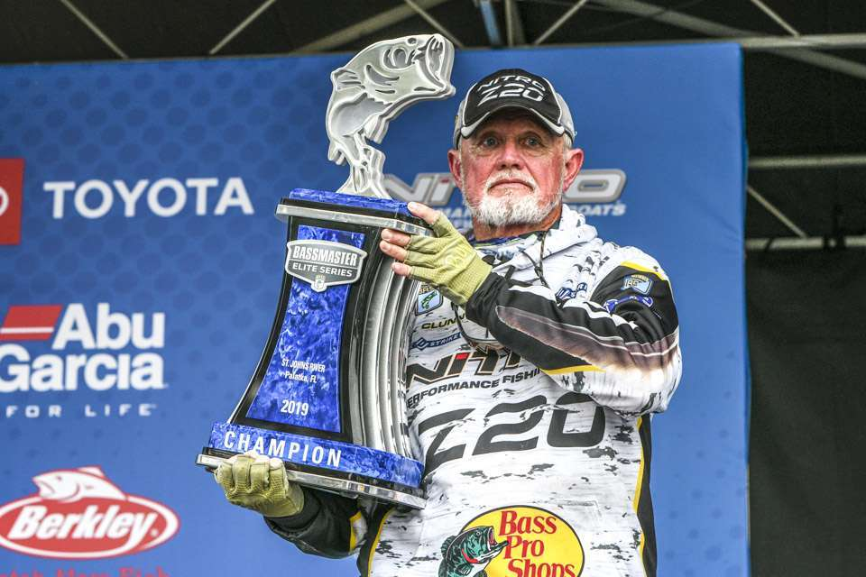
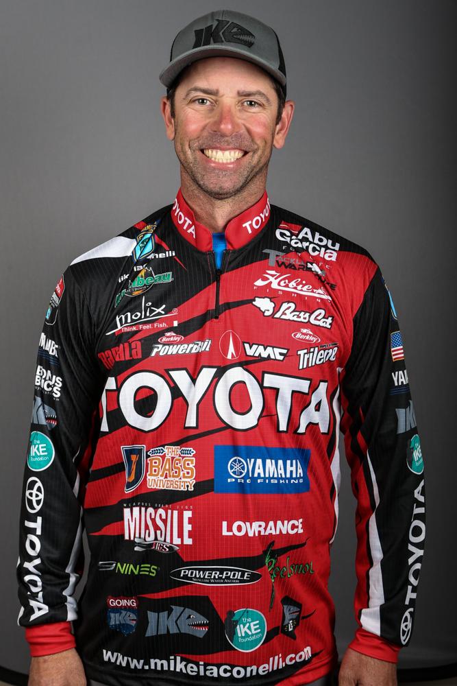

Sławni wędkarze
Wędkarze
Imię
Nazwisko
Kraj
Link
Zdjęcie
Rick
Clunn
USA
Link do Wiki

Michael
Laconelli
USA
Link do Wiki

Strona glówna (Historia)
Rodzaje Ryb
Galeria i źródła
Wędkarze
Dołącz do nas!